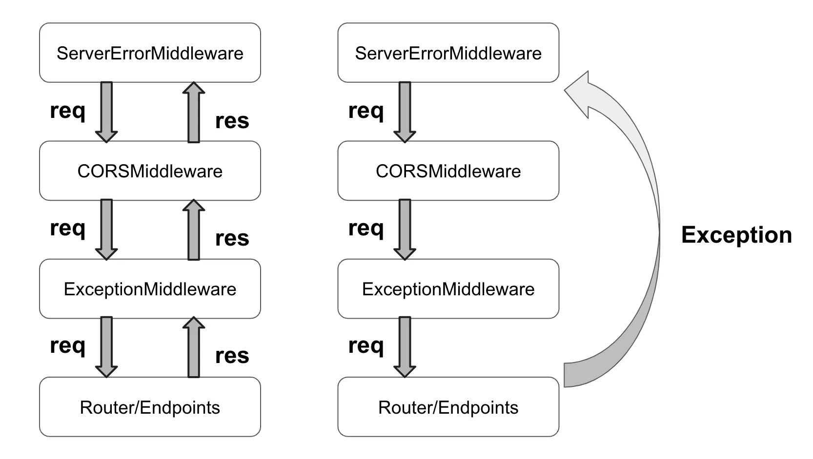

<meta charset="utf-8">
<html lang="ko">
<head>
    <link rel="stylesheet" type="text/css" href="../assets/css/style.css" />
    <title>FastAPI ErrorHandling 과 CORS (1) - 문제 파악</title>
</head>
<body id="tt-body-page" class="">
<div id="wrap" class="wrap-right">
    <div id="container">
        <main class="main ">
            <div class="area-main">
                <div class="area-view">
                    <div class="article-header">
                        <div class="inner-article-header">
                            <div class="box-meta">
                                <h2 class="title-article">FastAPI ErrorHandling 과 CORS (1) - 문제 파악</h2>
                                <div class="box-info">
                                    <p class="category">탐구 생활/FastAPI CORS</p>
                                    <p class="date">2025-02-10 00:02:11</p>
                                </div>
                            </div>
                        </div>
                    </div>
                    <hr>
                    <div class="article-view">
                        <div class="contents_style">
                            <p><figure class="imageblock alignCenter" width="360" height="360" >
    <span data-lightbox="lightbox">
        
    </span>
    <figcaption></figcaption>
</figure></p>
<p data-ke-size="size16">Starlette와 FastAPI에서 제공하는 CORSMiddleware와 ExceptionHandler가 함께 작동하지 않는 상황은 꽤 혼란스럽습니다. 이는 REST API 개발자 입장에서 상당히 중요한 이슈로, 많은 FastAPI 사용자들이 다양한 해결책을 논의(<a href="https://github.com/encode/starlette/issues/617" target="_blank" rel="noopener">link</a>, <a href="https://github.com/encode/starlette/issues/1175" target="_blank" rel="noopener">link</a>, <a href="https://github.com/fastapi/fastapi/discussions/8027" target="_blank" rel="noopener">link</a>)해 왔지만 제가 봤을때 명확하고 만족스러운 답이 나오지 않은 상태입니다. 우선 문제의 원인과 그 해법이 만족스럽지 않은 이유를 이야기해보겠습니다.</p>
<p data-ke-size="size16">&nbsp;</p>
<p data-ke-size="size16">다소 장황한 글이 될 수 있기 때문에 문제 원인과 문제 상황만 파악하고자 하시는 분은 <a href="https://probehub.tistory.com/68#%EB%AC%B8%EC%A0%9C%EC%9D%98%20%EC%9B%90%EC%9D%B8-1" target="_blank" rel="noopener">"문제의 원인"</a> 그리고 <a href="https://probehub.tistory.com/68#%EB%AC%B8%EC%A0%9C%20%EC%83%81%ED%99%A9-1" target="_blank" rel="noopener">"문제 상황"</a> 만 보셔도 됩니다.</p>
<h2 data-ke-size="size26"><b>문제 파악</b></h2>
<h3 data-ke-size="size23">Starlette&nbsp; Middlewere chain&nbsp;</h3>
<p data-ke-size="size16">Strlette 는 ASGI Spec 을 준수하며, 그에 따라 <a href="https://asgi.readthedocs.io/en/latest/specs/main.html#middleware" target="_blank" rel="noopener">Middleware</a> 라는 개념이 적용되어 있습니다. 그리고 이러한 Middleware 들이 요청, 응답 과정에서 연쇄적으로 동작하는 것을 Middleware chain 이라고 합니다.</p>
<p data-ke-size="size16">&nbsp;</p>
<p data-ke-size="size16">FastAPI application 은 Starlette application 을 더 사용하기 편하게 포장한것이고, 대부분의 주요 철학과 구현은 Starlette에 의존하고 있기 때문에 Sarlette의 Middleware chain 을 분석하겠습니다.</p>
<h3 data-ke-size="size23">주요 Middleware</h3>
<p data-ke-size="size16">Starlette 의 middleware chain 에서 cors 문제가 발생하는 문제를 이해하기위해 다음의 개념을 알아야 한비다.</p>
<ul style="list-style-type: disc;" data-ke-list-type="disc">
<li><b>Middleware:</b> 요청이 Starlette 애플리케이션에 도달하기 전과 응답이 반환된 후에 개입하여 처리합니다.</li>
<li><b>CORSMiddleware:</b> 사용자가 설정한 CORS 정책에 따라 preflight 요청을 검증하고 응답에 CORS 헤더를 추가합니다.</li>
<li><b>ExceptionMiddleware</b>: 특정 status_code 혹은 Exception 대해서 어떻게 대응할지 설정합니다.</li>
<li><b>ServerErrorMiddleware</b>: ExceptionMiddleware 에서 처리되지 않은 나머지 Exception 에 대응합니다.</li>
<li><b>ExceptionHandler:</b> 예외가 발생했을 때 이를 처리하는 방법을 정의합니다. ExceptionMiddleware 에 등록됩니다.</li>
<li><b>HttpException:</b> Starlette와 FastAPI에서 정의된 예외 클래스로, 상태 코드와 헤더 정보를 포함할 수 있습니다.</li>
</ul>
<hr contenteditable="false" data-ke-type="horizontalRule" data-ke-style="style5" />
<h3 data-ke-size="size23">Starlette 코드 분석</h3>
<p data-ke-size="size16">이제 직접 Starlette application 에 대한 코드를 보겠습니다. 이를 통해&nbsp;<b>ExceptionMiddleware</b> 와 <b>ServerErrorMiddleware</b> 는 자동으로 Startlette application 이 최초 요청을 받을때 초기화 되어(Lazy) 이후에는 캐싱되어 재사용되는 구조를 가지고 있다는 사실을 알 수 있습니다.&nbsp;</p>
<p data-ke-size="size16">&nbsp;</p>
<p data-ke-size="size16">또한 ExceptionHandler 에 등록된 Exception 에 대한 처리는 ServerErrorMiddleware 에 할당된다는 사실도 파악이 가능합니다.</p>
<pre id="code_1739609821357" class="python" data-ke-language="python" data-ke-type="codeblock"><code># starlette/applications.py

class Starlette:
    """Creates an Starlette application."""

    def __init__(...)
    
    # line 79
    def build_middleware_stack(self) -&gt; ASGIApp:
        debug = self.debug
        error_handler = None
        exception_handlers: dict[typing.Any, typing.Callable[[Request, Exception], Response]] = {}

        for key, value in self.exception_handlers.items():
            if key in (500, Exception):
                error_handler = value
            else:
                exception_handlers[key] = value

        middleware = (
        	# outermost
            [Middleware(ServerErrorMiddleware, handler=error_handler, debug=debug)]
            + self.user_middleware
            + [Middleware(ExceptionMiddleware, handlers=exception_handlers, debug=debug)]
            # innermost
        )

        app = self.router
        for cls, args, kwargs in reversed(middleware):
            app = cls(app, *args, **kwargs)
        return app

    # line 108
    async def __call__(self, scope: Scope, receive: Receive, send: Send) -&gt; None:
        scope["app"] = self
        if self.middleware_stack is None:
            self.middleware_stack = self.build_middleware_stack()
        await self.middleware_stack(scope, receive, send)
        
    # line 123 
    def add_middleware(
        self,
        middleware_class: _MiddlewareFactory[P],
        *args: P.args,
        **kwargs: P.kwargs,
    ) -&gt; None:
        if self.middleware_stack is not None:  # pragma: no cover
            raise RuntimeError("Cannot add middleware after an application has started")
        self.user_middleware.insert(0, Middleware(middleware_class, *args, **kwargs))

    # line 133
    def add_exception_handler(
        self,
        exc_class_or_status_code: int | type[Exception],
        handler: ExceptionHandler,
    ) -&gt; None:  # pragma: no cover
        self.exception_handlers[exc_class_or_status_code] = handler</code></pre>
<p style="color: #333333; text-align: start;" data-ke-size="size16">&nbsp;</p>
<p data-ke-size="size14">실제 코드 line 79 에 위치한 build_middleware_stack 함수를 통해 유저가 주입한 exception_handler&nbsp; 의 값에 따라 error_handler 와 exception_handler 가 구분되며, middleware 에 유저가 정의한 user_middleware 를 감싸는 구조로 ServerErrorMiddleware 와 ExceptionMiddleware 가 주입됩니다.</p>
<p style="color: #333333; text-align: start;" data-ke-size="size14">&nbsp;</p>
<p style="color: #333333; text-align: start;" data-ke-size="size14">실제코드 line 108 에 위치한 __call__ 에서<span>&nbsp;</span>build_middleware_stack 함수가 호출되며, 이를 통해 미들웨어는 Starlette application 생성 시점이 아니라 최초에<span>&nbsp;</span>Starlette application 이 요청을 처리하는 시점에 초기화 된다는 것을 알 수 있습니다.</p>
<hr contenteditable="false" data-ke-type="horizontalRule" data-ke-style="style5" />
<h3 data-ke-size="size23">문제의 원인</h3>
<p data-ke-size="size16">그렇다면 ExceptionMiddleware, ServerErrorMiddleware, CORSMiddleware 중 어디가 문제인걸까요?&nbsp;</p>
<p data-ke-size="size16">http status code 500 이나 Exception, 혹은 ExceptionHandler 에서 처리되지 않은 Exception 을 상속한 예외들에 대한 책임은 오롯이 ServerErrorMiddleware 의 것입니다.</p>
<p data-ke-size="size16">&nbsp;</p>
<p data-ke-size="size16">Outermost 에 ServerErrorMiddleware 가 존재하고 status_code 500 이나 Exception 으로 밖에 감지되지 않는 Exception 은 ServerErrorMiddleware로 바로 전달됩니다. 정확히 말하면, <b>다른&nbsp;middleware 에서 처리하지 않고 다음 middleware 를 계속 호출한 끝에 ServerErrorMiddleware 에게 전달</b>됩니다.</p>
<p data-ke-size="size16">그렇기 때문에 요청에서는 CORS 를 검사하지만 Exception 에 의한 응답에는 CORS 관련 헤더를 받을 수 없는 겁니다.</p>
<p><figure class="imageblock alignCenter" width="750" height="424" >
    <span data-lightbox="lightbox">
        
    </span>
    <figcaption></figcaption>
</figure></p>
<hr contenteditable="false" data-ke-type="horizontalRule" data-ke-style="style5" />
<h2 data-ke-size="size26"><b>문제 상황</b></h2>
<p data-ke-size="size16">그렇다면 도대체 Exception(ServerError)가 발새할때 CORS 헤더가 반환되지 않는게 왜 문제일까요?</p>
<p data-ke-size="size16">&nbsp;</p>
<h3 data-ke-size="size23">1. 클라이언트와의 약속이 깨집니다.</h3>
<p data-ke-size="size16">일반적으로 클라이언트는 서버와 약속된 에러코드에 따른 적절한 처리를 구현할 것입니다. 하지만 Exception 이 발생할때 의도치 않은 동작을 서버가 반환하기 때문에 클라이언트단에서 적절히 에러에 대응할 수 없게 됩니다.</p>
<p data-ke-size="size16">&nbsp;</p>
<p data-ke-size="size16">이는 유저경험에도 치명적이며 클라이언트단에서 에러 원인을 파악할 수 없도록 만들기에 에러 대응 시간을 늦추게 됩니다.</p>
<h3 data-ke-size="size23">2. 일관적이지 못한 예외처리로 혼란을 초래합니다.</h3>
<p data-ke-size="size16">Exception 이 아니라 HttpException 과 WebsocketException 은 ExceptionMiddleware에서 처리되기 때문에 CORSMiddleware 의 처리를 거치게 됩니다. 즉, <b>오로지 Exception 에 대해서만 CORS 응답 헤더가 추가되지 않는 것이지요.</b> 이러한 Starlette의 동작을 이해하지 못한 개발자는 다소 혼란을 겪을 수 밖에 없습니다.</p>
<p data-ke-size="size16">&nbsp;</p>
<p data-ke-size="size16">특히 FastAPI 에서 제공되는 HttpException 이 발생할때는 CORS 응답이 제대로 처리되기 때문에 "원인을 알 수 없지만, 종종 서버가 CORS 에러를 만들어낸다" 는 결론에 도달하게 됩니다. 게다가 FastAPI 공식문서에서는 이러한 이슈를 다루고 있지 않기 때문에 더욱더 혼란스러울 뿐입니다.</p>
<hr contenteditable="false" data-ke-type="horizontalRule" data-ke-style="style5" />
<p data-ke-size="size16">FastAPI 유저들은 이 문제를 어떻게 대응하고 있는지 <a href="https://probehub.tistory.com/69" target="_blank" rel="noopener">"FastAPI ErrorHandling 과 CORS (2) - 대안 파악"</a> 에서 알아보겠습니다.</p>
                        </div>
                        <br/>
                        <div class="tags">
                            #fastapi cors #fastapi exceptionhanlder cors #fastapi corsmiddleware 
                        </div>
                    </div>
                </div>
            </div>
        </main>
    </div>
</div>
</body>
</html>
